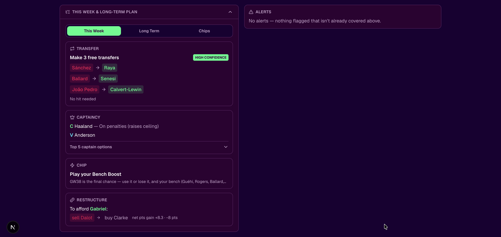
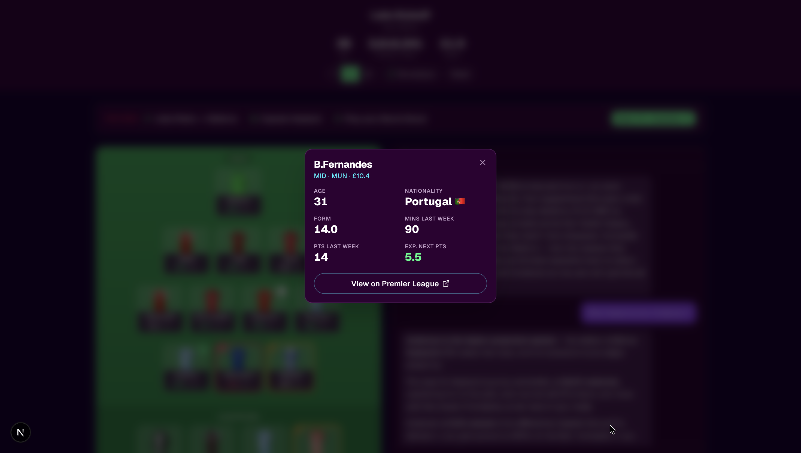
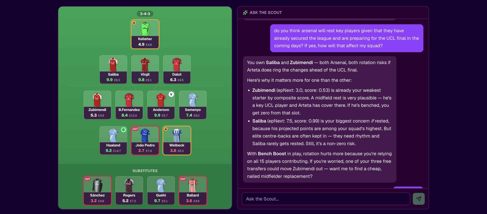
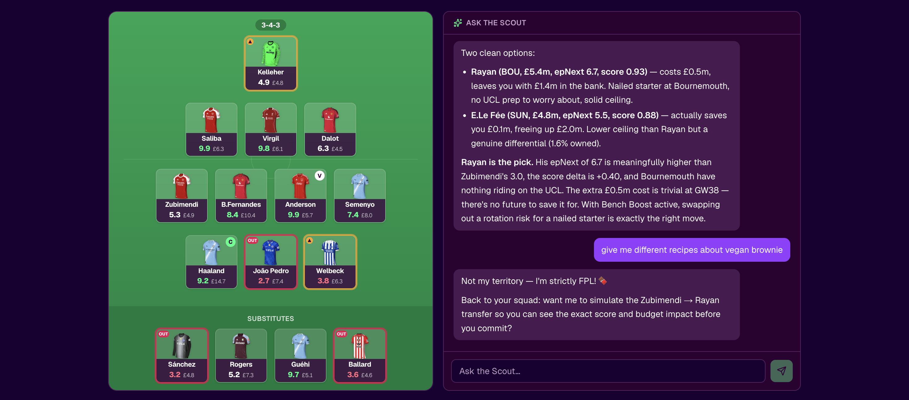
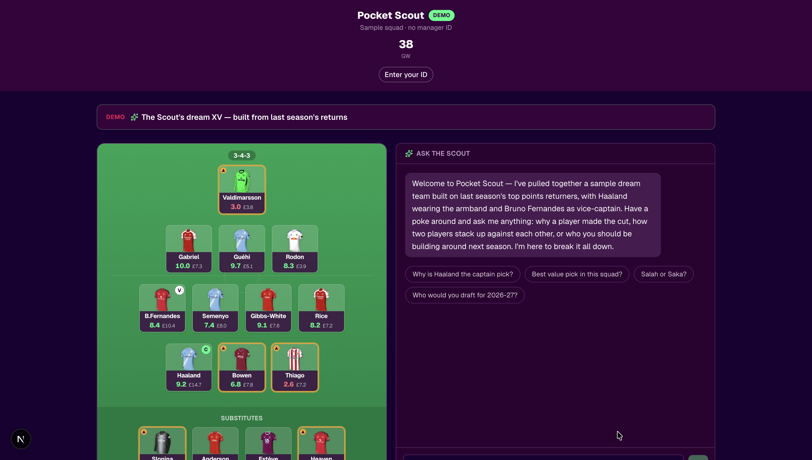

Your whole gameweek, answered on one screen.
The moment you load your squad, Pocket Scout has a view: every player rated 0–10 on a position-aware scale, a glanceable verdict banner telling you this week's transfer, captain pick, and chip call, and an "Ask the Scout" chat docked alongside for everything else. No spreadsheets, no twelve open tabs — just your team and what to do with it.
Transfers, captaincy, and chips — sorted.
This is the part that actually wins your mini-league. Pocket Scout turns the week's hardest calls into a clear plan across three horizons: an immediate transfer, captain, and chip recommendation for This Week, a multi-gameweek Long Term outlook, and a Chips sequencing strategy for the season. It plans around your real budget too — respecting your 0–5 free transfers and banking a move rather than forcing a wasteful one when holding is the stronger play.


Every question about your squad, answered.
"Should I captain Haaland this week?" "Who's a rotation risk before the run-in?" "Is it worth taking a hit?" The questions FPL managers stew over all week now have an instant, specific answer — a chat that knows your actual team and talks you through the call like a mate who's done the homework. And because an open chat box also invites prompt injection, the Scout treats every message as a question to answer, not an instruction to obey — so it can't be talked off-script.


Explore without a manager ID.
Anyone can try the full experience through a synthesized "dream team" — the Scout's best XV built from last season's returns — so the app is fully explorable before you ever type in your FPL ID. It's a small product decision that says a lot about building for the person evaluating your work, not just the person who already uses it.

Advice that holds up when you check it.
Advice is only worth following if it's right — and FPL managers check the numbers afterward. So the hard figures are computed deterministically before any language model is involved: a base phase rates your squad and proposes moves straight from the FPL API, and only then does Claude reason over those numbers to explain the call. The model is the pundit; it never invents the underlying stats.
Most FPL chatbots happily hallucinate prices, form, and fixtures. Pocket Scout's chat is wired to fetch real stats through tool calls before it answers — and if the evidence isn't there, it says so instead of making something up. That reliability is what turns a clever demo into advice you'd actually act on.
A modern stack, deployed for real.
Pocket Scout is a full-stack TypeScript application, not a notebook demo — built on the Next.js App Router, served behind a Caddy reverse proxy in Docker, and guarded by a substantial test suite so behavior stays pinned as the model and rules evolve.
shadcn components — the rated pitch, planner drawer, and chat are all client-driven, glanceable UI.331 tests plus squad-replay backtests guards both the deterministic engine and the prompt behavior against regressions.The decisions that were earned by data.
Development was eval-first and OpenSpec-driven — roughly fifty documented change proposals, each justified by a measurement rather than a hunch. A few of the calls that shaped the product:
I built Pocket Scout because I am one of those eleven million managers, and the weekly decisions — who to bring in, who to captain, when to burn a chip — are genuinely hard and genuinely fun to argue about. The goal was simple: put a smart, opinionated advisor in everyone's pocket that actually knows your team, so the answer to "what should I do this week?" is one question away.
The catch is that FPL managers check the numbers. Advice that quotes the wrong price or invents a fixture gets caught instantly, so reliability wasn't optional — it was the difference between a fun demo and something people would trust with their rank. That's why the architecture computes the facts deterministically and lets Claude reason over them, rather than the other way around.
The most satisfying part was letting evaluation overrule intuition. The optimizer "felt" smart when it suggested moves every week — until replays showed it was churning value away. The fixture-difficulty upgrade "felt" like an obvious win — until the backtest said otherwise. Both got corrected because the eval harness had the final word, not me — the same standard I hold every project on this site to.
Want to see how it advises your squad?